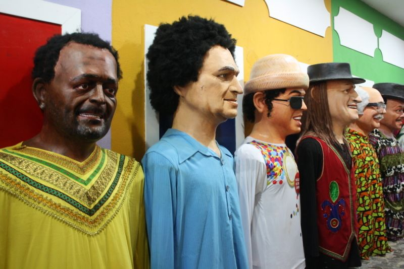

Outros pontos turísticos
Conheça outros pontos turísticos em Recife
A cidade do Recife é uma das mais famosas do Nordeste, ela possui diversos pontos turísticos.
Conheça agora dois outros pontos turísticos que você deve inserir no seu roteiro:
Embaixada dos Bonecos Gigantes
A Embaixada dos Bonecos Gigantes expõe os famosos bonecos criados para participar do Carnaval nas duas cidades, permitindo que os turistas tenham uma clara ideia da dimensão, da estrutura e do modo de criação dos personagens. Os bonecos pesados e bem trabalhados representam personalidades variadas, personagens de desenhos e figuras brasileiras que se destacam ao longo do ano.
Centro de Artesanato de Pernambuco

Com uma área de mais de 2,5 mil m², o espaço traz ambientes decorados para que o visitante possa visualizar a utilização de peças artesanais em espaços como sala de estar, sala de jantar, quarto, entre outros, através de um olhar contemporâneo. A loja tem artesanato das mais diversas matérias-primas, como cerâmica, madeira, vidro, metal, renda, têxtil e outros. O Centro é mais uma ação integrada do Governo do Estado, através da Diretoria de Artesanato da Agência de Desenvolvimento Econômico de Pernambuco (AD Diper), ligada à Secretaria de Desenvolvimento Econômico de Pernambuco (SDEC), e funciona como ponto de convergência entre todas as iniciativas do Programa do Artesanato de Pernambuco (PAPE), como a Fenearte, a Unidade Móvel do Artesanato e o apoio aos artesãos nas diversas feiras realizadas no Brasil.